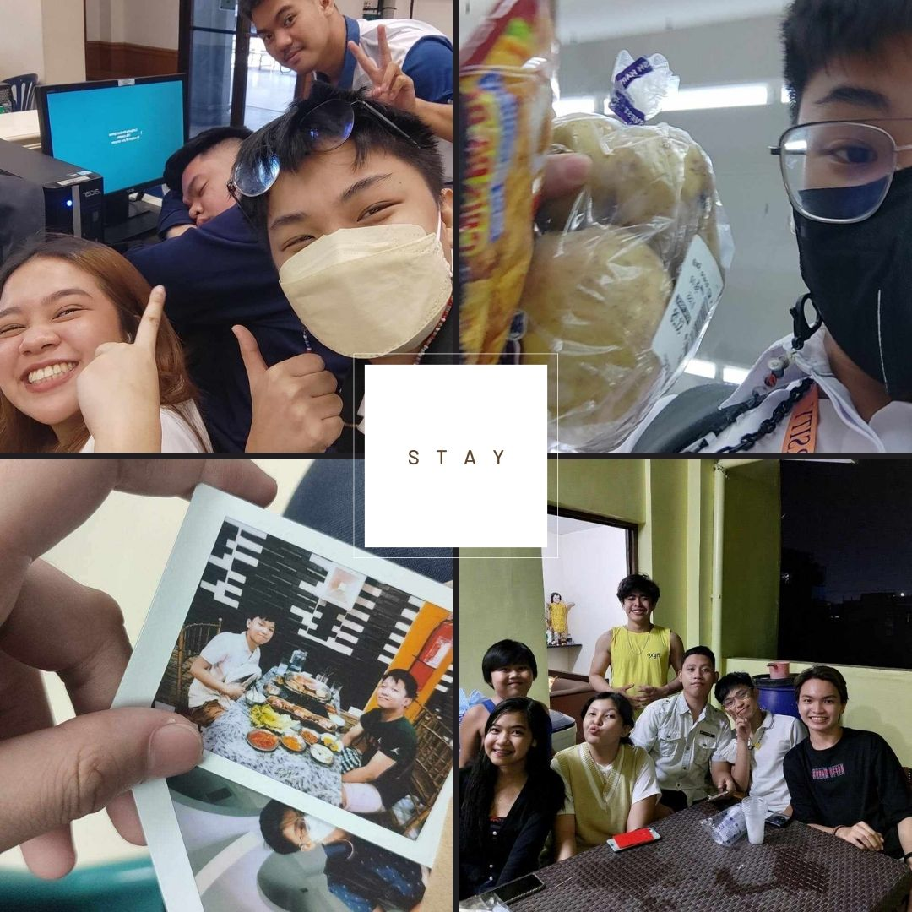
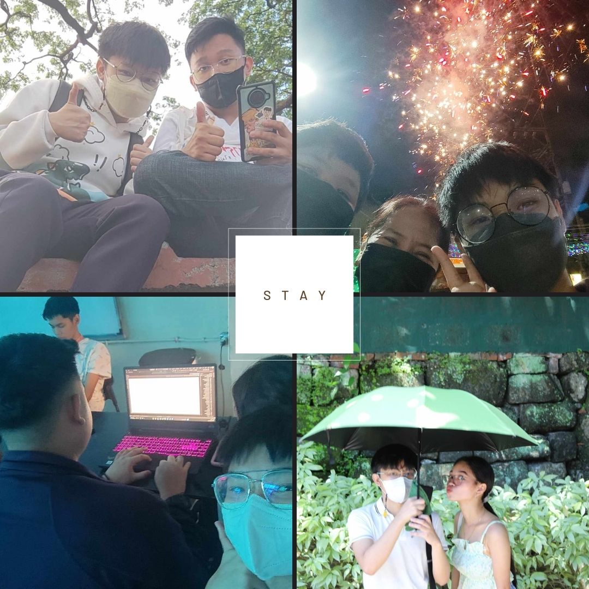
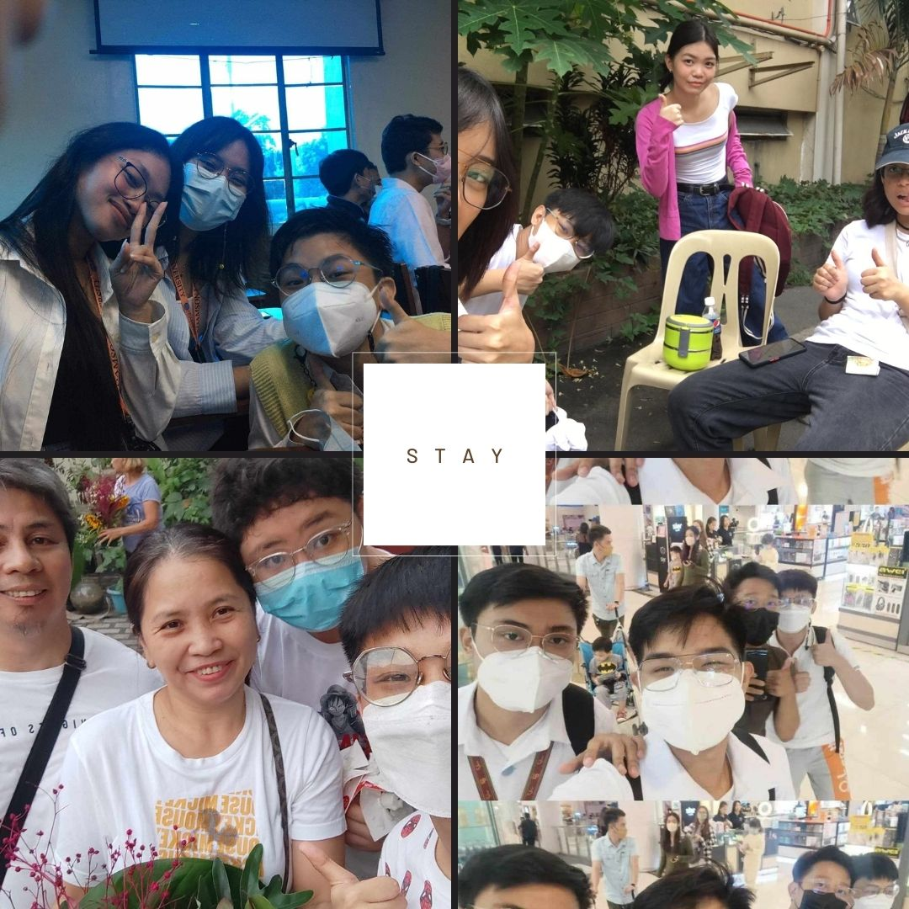

The photos here are just a few of the people I wanted to embrace in my journey; they have been there since I first began to believe in myself. Some I met along the way, while others were there from the beginning, such as my family, lover, and high school classmates. I continued to behave as the joyful, optimistic, and lively Andre. But my former self also contains my negative traits, such as sadness, anxiety, and rage. Even if I go through changes, especially in my actions, most of my former behavior—whether it was great or negative— still remains with me. I looked into the difficulty of letting go and embracing fresh beginnings when one feels bound to the past. Memorable experiences like my failure to recite during a discussion and my heartbreak are just a couple, but they all taught me a lot. I continue to feel a sense of nostalgia and a wish to be in a place where my memories are still fresh in my memory.

However, being in this emotional period for too long may hinder personal growth and interfere me from progressing. It is essential for achieving a balance between incorporating the past and looking forward. While staying where you were left may bring temporary refuge, there comes a time when you have to let go, heal, and forge a new path. One terrible event is being denied by one of your top college selections. I understand how difficult it is to recover, but we also need the strength to keep moving forward and possibly reconnect with ourselves. One or two traumatic experience does not define you, you are more than that. Greater opportunities await you; perhaps fate promises you a better outcome or simply wishes for you to suffer. Perhaps fate has something greater in store for you, or perhaps it wants you to endure a loss in order for you to grow and learn. Embrace the path ahead with optimism and dedication, knowing that your worth and ability stretch far beyond this unexpected roadblock.

I still don't understand how I am still surviving after everything I've been through. As I have said in my previous episodes, I understood it was time to move on and let go of my painful experiences. The memories will stay, but I will only keep those that have had a beneficial impact on my mental health. I appreciate the lessons they taught me, but I don't have to carry them all with me forever. Moving on is a changing path that necessitates courage and compassion for oneself. By putting my mental health first, I make room for personal growth and a brighter future. Even if it won't be easy, I know I will reach the right path. It's time to let go of the burdens of the past and make room for new possibilities. I'm ready to go forward with strength and resilience, leaving the painful experiences behind and embracing a life of healing, progress, and happiness.